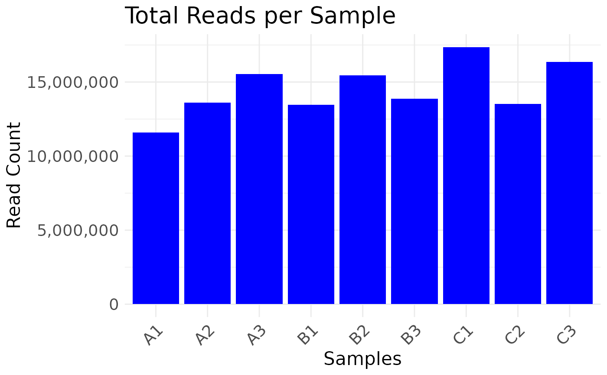
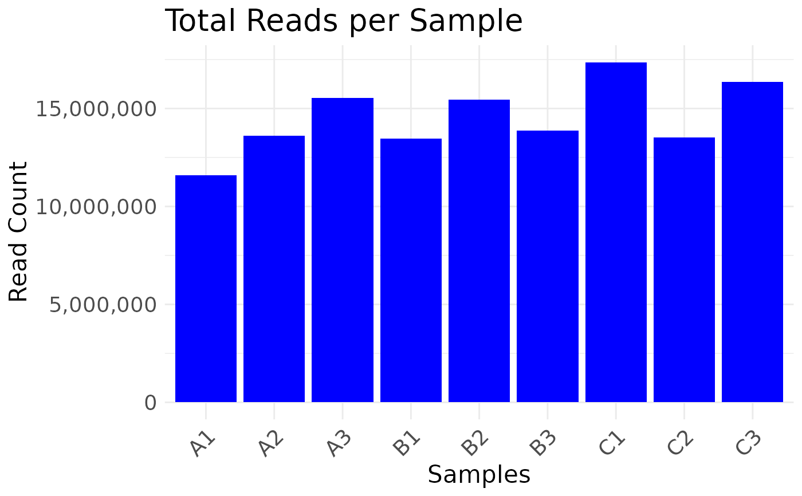

Plot read depth for data.frame
See also
plot_read_depth generic
Other plotters for counts dataframes:
plot_corr_heatmap_dat,
plot_histogram_dat,
plot_pca_dat
Examples
# dataframe
plot_read_depth(nidap_clean_raw_counts)

Plot read depth for data.frame
plot_read_depth generic
Other plotters for counts dataframes:
plot_corr_heatmap_dat,
plot_histogram_dat,
plot_pca_dat
# dataframe
plot_read_depth(nidap_clean_raw_counts)
